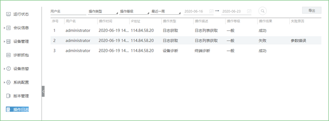
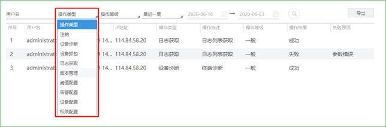
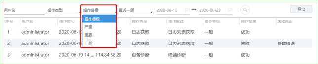

操作日志主要记录了用户的基本操作，具体有注销、设备诊断、设备抓包、日志获取、版本管理、阈值配置、告警配置、设备配置、权限配置，并可将数据导出至本地，方便排查问题。具体操作方法如下：
1. 在操作日志界面，可输入需查询的用户名；

2. 在操作类型处进行选择；

3. 在操作等级处，选择严重/重要/一般；

4. 选择时间，点击 ，开始查询；
，开始查询；
5. 点击【导出】，将查询的结果以Excel表格形式保存至本地。
说明：
用户名、操作类型、操作等级为可选项目，查询时间为必选项目，若自定义查询时间需要选择起止时间；如果不输入用户名，默认查询administrator的信息。